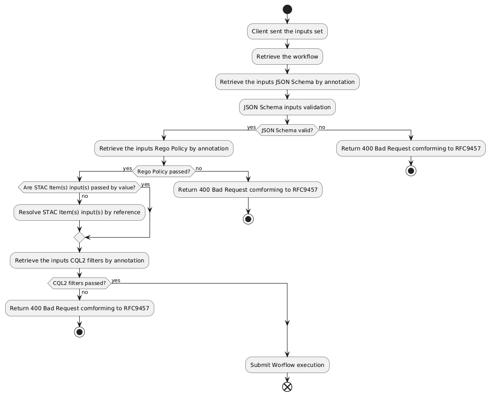
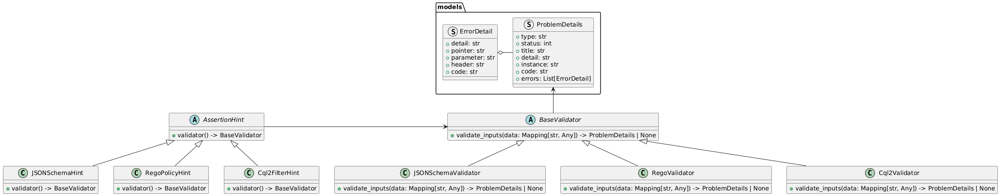
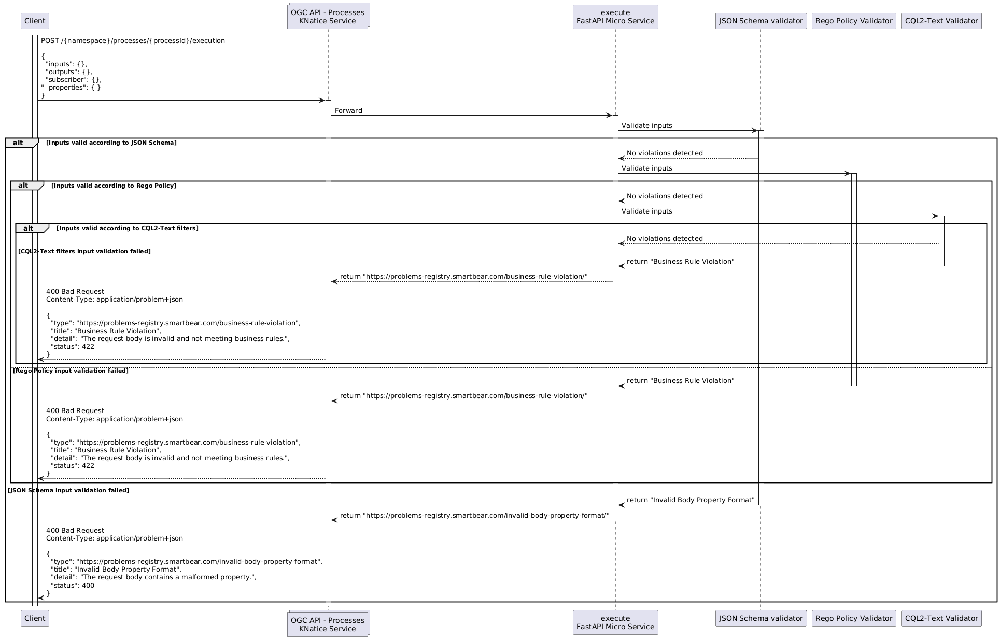

Architecture and Design
assertions-mate is built around hint-driven validation for CWL workflows.
Why Hints
CWL input typing can enforce structure, but many operational constraints are semantic: - policy constraints - domain rules - geospatial relationships
Hints let these constraints travel with workflow definitions and be checked consistently before runtime.
Validation Flow
- Load CWL workflow document(s).
- Read
workflow.hints. - Map supported
eoap:*hint classes to typed hint models. - Build validator objects from hints.
- Run each validator against provided inputs.
- Aggregate and log violations.
Execution Semantics
assertions-mate follows a best-effort setup model:
- each hint is mapped and initialized independently
- setup failures for one hint do not prevent other hints from running
- validation output is therefore partial if one validator fails to initialize
This model favors operational continuity and progressive validation.

Validator Model
Each hint type is responsible for producing a validator via .validator().
This keeps: - hint parsing and serialization concerns in hint models - runtime validation behavior in validator classes
Input Shape and Key Resolution
Validators operate on the loaded input mapping as-is.
Implications:
- input keys must match workflow input names exactly
- object wrappers such as value must be handled explicitly in rules (for example in Rego)
- inconsistent shape across workflows can produce false negatives if rules target the wrong path
Supported Rule Languages
- JSON Schema: structural constraints over payload shape and values
- Rego: policy-oriented queries and rich rule composition
- CQL2: declarative predicate checks, including geospatial expressions

Reliability Tradeoffs
- Strength: multi-validator execution can still produce useful checks when one hint fails setup.
- Tradeoff: setup errors and runtime backend constraints may reduce total coverage for a given run.
- Practical guidance: treat logs as part of the contract and monitor setup failures explicitly in CI.

Known Gaps and Improvement Areas
- Runtime-specific parser differences can affect CWL load behavior and Rego syntax support.
- Some CQL2 features require explicit coercion helpers (
ensure_spatial,ensure_bbox). - Strict fail-fast exit semantics for reported violations are not yet guaranteed in all execution paths.